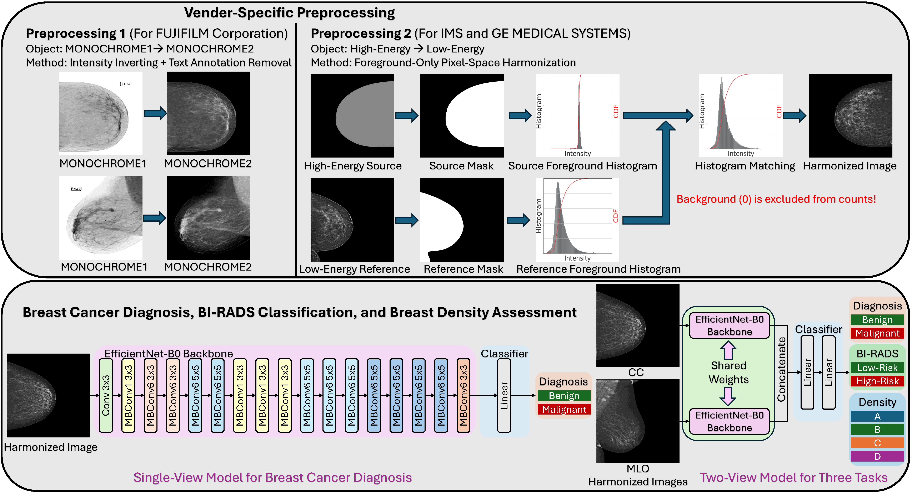
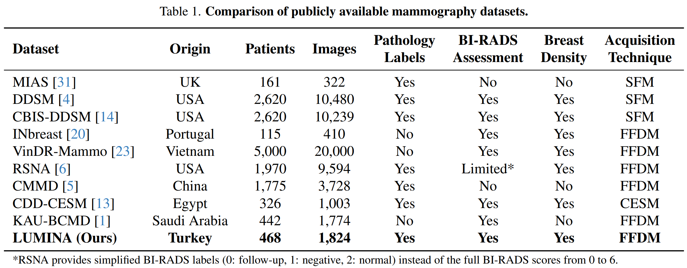
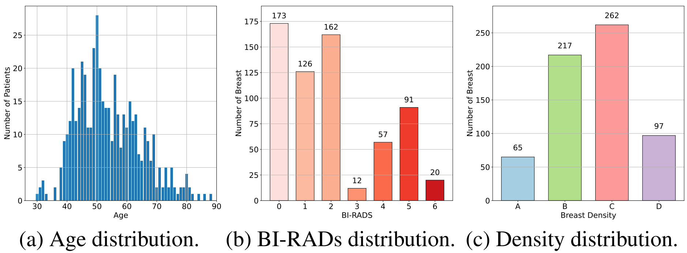
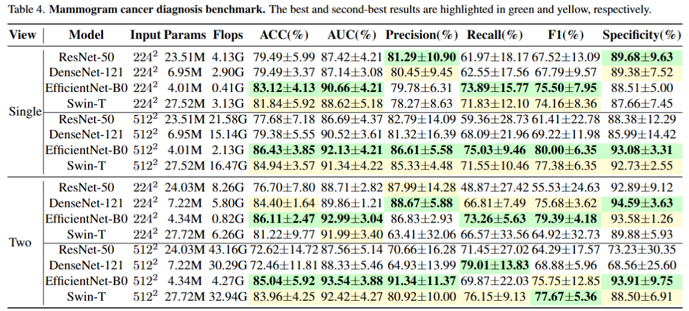
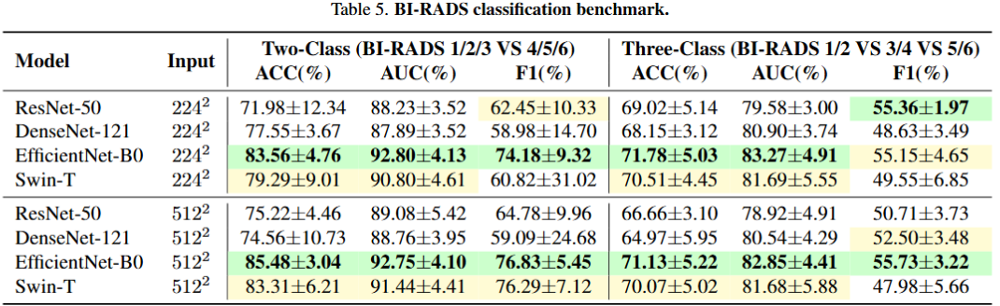
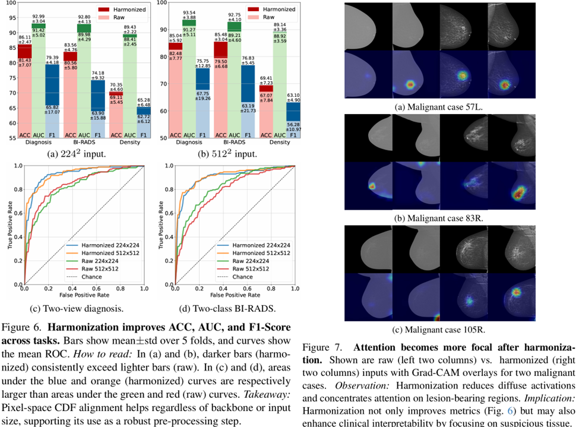

Abstract
Publicly available full-field digital mammography (FFDM) datasets remain limited in size, clinical annotations, and vendor diversity, hindering the development of robust models. We introduce LUMINA, a curated, multi-vendor FFDM dataset that explicitly encodes acquisition energy and vendor metadata to capture clinically relevant appearance variations often overlooked in existing benchmarks. This dataset contains 1824 images from 468 patients (960 benign, 864 malignant), with pathology-confirmed labels, BI-RADS assessments, and breast-density annotations. LUMINA spans six acquisition systems and includes both high- and low-energy imaging styles, enabling systematic analysis of vendor- and energy-induced domain shifts. To address these variations, we propose a foreground-only pixel-space alignment method (''energy harmonization'') that maps images to a low-energy reference while preserving lesion morphology. We benchmark CNN and transformer models on three clinically relevant tasks: diagnosis (benign vs. malignant), BI-RADS classification, and density estimation. Two-view models consistently outperform single-view models. EfficientNet-B0 achieves an AUC of 93.54% for diagnosis, while Swin-T achieves the best macro-AUC of 89.43% for density prediction. Harmonization improves performance across architectures and produces more localized Grad-CAM responses. Overall, LUMINA provides (1) a vendor-diverse benchmark and (2) a model-agnostic harmonization framework for reliable and deployable mammography AI.
Dataset



Benchmark


Harmonization improves ACC/AUC/F1 and makes attention more focal

BibTeX Citation
@inproceedings{pan2026lumina,
title={LUMINA: A Multi-Vendor Mammography Benchmark with Energy Harmonization Protocol},
author={Pan, Hongyi and Durak, Gorkem and Aktas, Halil Ertugrul and Bejar, Andrea M and Tutun, Baver and Uysal, Emre and Bulbul, Ezgi and Dogan, Mehmet Fatih and Erok, Berrin and Yildirim, Berna Akkus and others},
booktitle={CVPR},
year={2026}
}